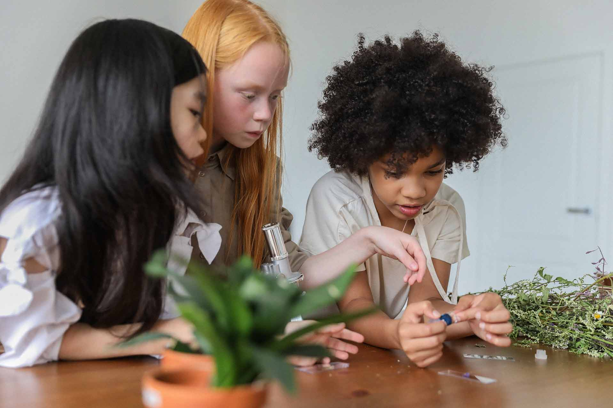

Notre projet éducatif
LE PROJET POUR L'ENFANT
L'école Saint-Raphaël veut préparer chaque enfant à devenir une personne en développant toutes ses compétences ainsi qu'un citoyen capable de vivre au sein d'une société.
Dans cet esprit, elle cherche donc à l'éveiller, à lui permettre de vivre avec certaines valeurs de référence tel que :
- L'AUTONOMIE,
- LA RESPONSABILITÉ,
- LE SENS DE L'EFFORT,
- LE PARTAGE,
- LE RESPECT,
- LA RIGUEUR.

Nous souhaitons aussi favoriser l'accueil et le respect des autres chez l'enfant. Pour cela, nous mettons l'accent sur ces points importants :
- Accueillir et intégrer des enfants de tous horizons,
- Savoir reconnaître les richesses de tous,
- Apprendre le respect à travers la participation à des projets divers.

L'école Saint-Raphaël, c'est 385 élèves, 25 personnes au service des enfants, un ensemble d'association aidant à la vie et au dynamisme de l'établissement :
- L'association de parents d'élèves (A.P.E.L),
- L'organisme de gestion (O.G.E.C),
- L'équipe d'anciens et de bénévoles.
C'est aussi :
- Une initiation et un apprentissage de l'anglais dès 5 ans,
- L'utilisation de l'outil informatique dès les classes maternelles,
- Un cross d'automne,
- Une semaine de festival du livre,
- La participation au Téléthon,
- Une participation aux animations sportives,
- Un voyage scolaire tous les deux ans pour tous les élèves des 9 classes élémentaires,
- Des sorties culturelles et pédagogiques en fonction des projets vécus dans les classes,
- Un carnaval
- Une kermesse de fin d'année
L'école Saint-Raphaël se veut une école où il fait bon vivre. Un lieu où l'on apprend à vivre ensemble dans le respect de chacun et le respect du règlement.
PARRAINAGE
Le parrainage à l’école St Raphaël
Depuis quelques années l’école organise un parrainage entre les classes. Pour les plus grands, c’est l’occasion de se valoriser auprès d’un plus petit qu’il prend sous son aile.
Cela les pousse à bien se comporter pour être exemplaire et à leur apprendre les bonnes règles de vie. Certains, très introvertis, se révèlent dans ce rôle qu’ils prennent souvent très à cœur.
Quant aux plus jeunes, la présence des plus grands les rassure et souvent, une forte relation se tisse entre eux.
Toutes les occasions sont bonnes pour se rencontrer : le partage d’un goûter, la présentation d’un projet, l’accompagnement lors d’un temps fort…. On vit ainsi des moments d’écoute et d’échanges qui ne peuvent que favoriser les apprentissages et développer le bien être de chacun dans notre école.